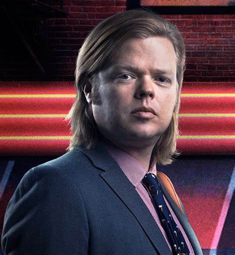

Se trata de una serie estadounidense creada por Drew Goddard para Netflix. La serie está ambientada en el Universo cinematográfico de Marvel (UCM), compartiendo continuidad con las películas de la franquicia; sin embargo, podemos decir que puede ser tomada como una serie independiente y seguir funcionando. La serie abarca los géneros de acción, drama, crimen y superhéroes, la cual sigue a Matt Murdock, un abogado ciego que lucha por la justicia bajo el sistema legal de día y de noche, como el justiciero Daredevil de noche. Esta serie abarca diversos temas como la corrupción en la sociedad, la diferente forma de cada persona de ver la justicia y la violencia como necesaria para lograrla, en diversos momentos se plantean cosas como la moralidad o si acaso hay alguna forma en que el matar esté justificado o que hacer cuando la justicia no resulta justa y resulta insuficiente.

| Nombre | Imagen | Descripción |
|---|---|---|
| Matt Murdock / Daredevil | |
Principal protagonista de la serie , es un hombre ciego que trabaja como abogado de dia y como el justiciero Daredevil de noche contra el crimen organizado y la corrupcion de la ciudad. |
| Foggy Nelson |  | Mejor amigo y compañero de Matt Murdock en el bufete de abogados Nelson & Murdock. |
| Karen Page | |
La secretaria del bufete de abogados y eventual interés amoroso de Matt Murdock, involucrada en los casos legales y peligros de la serie. |
| Wilson Fisk / Kingpin | |
Es el principal antagonista de la serie el cual controla todo el crimen organizado de la ciudad y posee mucho poder e influencia en toda la sociedad como lo es la politica , policia,etc. |